화약류관리기사 (2004-09-05 기출문제)
1과목: 일반화약학
1. 다음 반응식과 같이 폭발하는 폭약은?
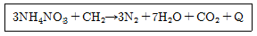
- ANFO
- TNT
- 질산 구아니딘
- 콜다이트
(정답률: 80%)

2. 뇌홍의 폭발 반응식은 Hg(ONC)2 → Hg + N2 + 2CO 이다. 이 때 CO를 CO2로 바꾸어 열량을 크게 하기 위하여 첨가하는 것은?
- 염소산칼륨
- 알루미늄
- 규소
- 전분
(정답률: 알수없음)
3. 다음 화약 중 질산에스테르에 속하는 것은?
- C24H29O9(NO3)11
- C6H4(NO2)2
- C6H2CH3(NO2)3
- C6H2(NO2)3OH
(정답률: 알수없음)
4. 유상액체로 순수한 것은 무색투명하고 개방상태에서는 극소량 점화하면 폭발하지 않고 급속히 연소한다. 물에는 녹지 않고 따뜻한 에틸에테르, 벤젠, 페놀에 잘 녹는 화합물은?
- 니트로셀룰로오스
- 니트로글리콜
- 니트로글리세린
- 피크린산
(정답률: 알수없음)
5. 화약류의 안정도 시험 방법은?
- 마찰시험
- 가열시험
- 낙추시험
- 폭속시험
(정답률: 91%)
6. 피크린산(picric acid)은 저장하거나 사용할 때 금속물과 직접 접촉하는 것을 피하고 있다. 가장 큰 이유는?
- 금속 용기를 부식시키므로
- 중금속과 반응하여 유해가스가 발생하므로
- 화약자체가 둔화되므로
- 금속과 화합하여 예민한 화합물이 되므로
(정답률: 80%)
7. 분상 다이너마이트는 교질 다이너마이트에 비하여 흡습성이 크기 때문에 습기에 주의해야 한다. 실제에 있어서도 이 점을 소홀히했기 때문에 때로는 사고의 원인이 되기도하는데 다음 중 가장 타당한 이유는?
- 흡습에 따라 니트로글리세린이 동시에 녹아 나온다.
- 흡습한 것은 겨울에 얼기 쉽고 폭발감도도 예민해진다.
- 흡습한 것은 폭발감도가 저하하여 불발이나 잔유물이 생성된다.
- 안정도가 저하하고 자연분해를 일으키기 쉽다.
(정답률: 알수없음)
8. 다음 반응식과 같이 100g 의 질산칼륨이 분해된다면 몇 g의 산소가 발생 하는가? (단, 원소의 원자량은 K : 39, N : 14, O : 16 )
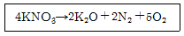
- 396.6g
- 19.8g
- 39.6g
- 190.8g
(정답률: 75%)
9. 뇌관을 꽂은 약포와 뇌관을 달지 않은 약포를 어느 거리 만큼 떼어두고 뇌관을 단 약포를 폭발시켰을 때, 감응해서 폭발하는 것을 순폭이라 한다. 이때 그 최대거리를 s, 약포지름을 d 라고 하면 순폭도는 어떻게 나타내는가?
- n = s×d
- n = s/d
- n =d/s
- n =1/sd
(정답률: 알수없음)
10. 벤젠의 니트로화에 대한 설명으로 옳은 것은?
- N+O2 가 반응하는 친전자적 치환반응이다.
- 친핵적 치환반응이다.
- NO3- 가 벤젠고리를 공격한다.
- 폴리니트로화가 쉽게 일어난다.
(정답률: 70%)
11. 다음 중 혼합 다이너마이트의 종류가 아닌 것은?
- 규조토 다이너마이트
- 스트레이트 다이너마이트
- 암모니아 다이너마이트
- 젤라틴 다이너마이트
(정답률: 알수없음)
12. 자연 분해시 다이너마이트에서 적갈색의 특유한 냄새를 내는 발생가스는?
- 일산화질소
- 과산화질소
- 일산화탄소
- 질소
(정답률: 알수없음)
13. 기폭약의 열감도가 예민한 순서대로 나열한 것은?
- 뇌홍 - 질화납 - DDNP - 테트라센
- 테트라센 - DDNP - 뇌홍 - 질화납
- 질화납 - 테트라센 - 뇌홍 - DDNP
- DDNP - 뇌홍 - 테트라센 - 질화납
(정답률: 알수없음)
14. 비전기식뇌관에 대한 설명으로 옳지 않은 것은?
- 시그널튜브 내부에 코팅되는 화약은 HMX와 Al의 혼합물이다.
- 전기뇌관에 비해 다양한 발파패턴 설계가 가능하다.
- 전용스타터로 기폭되지만 공업뇌관이나 도화선으로 도 기폭한다.
- 기폭신호의 전달은 직경 3mm의 플라스틱 튜브 안에 코팅된 폭약이 2000m/sec의 폭속으로 폭굉하며 이루어진다.
(정답률: 알수없음)
15. 연주압축시험(Hess brisance test)에서 사용하는 연주의 규격으로 맞는 것은?
- 직경 40mm, 높이 30mm
- 직경 50mm, 높이 30mm
- 직경 40mm, 높이 20mm
- 직경 50mm, 높이 20mm
(정답률: 88%)
16. 8호 전기뇌관을 둔성폭약시험을 하고자 한다. 둔성폭약의 조성비로 맞는 것은?
- TNT:탈크=80:20
- TNT:탈크=70:30
- TNT:탈크=60:40
- TNT:탈크=50:50
(정답률: 알수없음)
17. 폭발압접에 대한 설명으로 옳지 않은 것은?
- 금속이 한계이상의 고속으로 충돌할 때 제트분류가 발생한다.
- 음속이 큰 금속은 폭속이 작은 폭약을 사용하여 폭접한다.
- 제트분류는 접촉면에 부착된 산화피막을 제거한다.
- 특수용접장치가 불필요하고, 야외에서도 시공할 수 있다.
(정답률: 알수없음)
18. 다음 중 도폭선의 심약으로 사용할 수 없는 것은?
- TNT
- RDX
- PETN
- Block powder
(정답률: 90%)
19. 공업용 뇌관의 성능을 알려고 할 때의 시험방법은?
- 도화선시험
- 폭속시험
- 내열시험
- 납판시험
(정답률: 85%)
20. 피크린산에 대한 설명으로 옳지 않은 것은?
- 원명은 2, 4, 6-trinitrophenol 이다.
- 제법으로는 술폰화법과 클로로벤젠법 등이 있다.
- 단맛의 백색분말 상태이다.
- 폭속은 7350m/sec이며 알코올에 녹는다.
(정답률: 알수없음)
2과목: 발파공학
21. 2자유면 발파에 있어서 천공장 D, 약량 L, 최소저항선 W, 발파계수 C로 발파를 실시하여 양호한 성적을 얻었다. D, C는 불변이고 L을 2배로 하고 채석량을 2배로 하고 싶다. 이 때 W을 몇 배로 하면 좋은가? (단, 같은 약량은 동일의 채석량을 가져온다고 본다.)
- 1.2배
- 1.4배
- 2.8배
- 6.6배
(정답률: 알수없음)
22. 발파에 의한 가옥의 피해 손상정도를 판단하는 기준으로 기초 지반에서의 탄성파 속도 C(km/sec)에 대한 지반진동 속도 V(cm/sec)의 비인 V/C를 이용할 수 있다. 가옥에 미세한 크랙(crack)이 발생하는 V/C 값으로 가장 적합한 것은?
- 0.6
- 1.0
- 1.4
- 3.3
(정답률: 알수없음)
23. 다음은 뇌관에 도화선을 설치할 때 지켜야 할 규정이다. 틀린 것은?
- 도화선 길이는 천공깊이, 점화갯수, 대피소요시간을 고려한다.
- 도화선을 직각으로 절단하여 뇌관의 내관부까지 밀착하여 삽입한다.
- 뇌관집게를 사용하여 뇌관의 입구를 잘 체결한다.
- 뇌관에 도화선 설치작업은 발파작업 현장에서 수행한다.
(정답률: 알수없음)
24. 아래 그림과 같은 발파법을 무슨 발파라고 하는가?
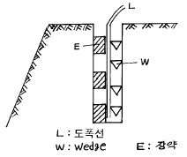
- Line drilling
- Cushion blasting
- Pre-splitting
- Smooth blasting
(정답률: 알수없음)
25. 다음의 표는 1회의 발파를 수행하면서 진동속도를 측정하여 진행방향성분(VL), 접선방향성분(VT), 수직방향성분(VV)의 최대값이 측정된 시간에서의 각 성분별 진동속도자료이다. 이 자료만을 기초로 할 때, 이 발파에서 발생한 최대진동속도(PVS)는 얼마인가?
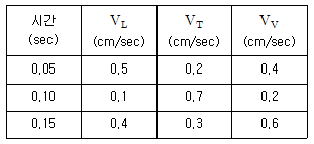
- 0.67 cm/sec
- 0.73 cm/sec
- 0.78 cm/sec
- 1.⑤ cm/sec
(정답률: 알수없음)
26. 발파진동을 고려한 안전기준이 제곱근 환산거리 20으로 주어졌다면 500m 거리가 확보되었을 때 지발당 최대 장약량은 얼마까지 사용할 수 있는가?
- 50kg
- 25kg
- 10kg
- 625kg
(정답률: 알수없음)
27. 전기뇌관을 이용한 발파의 설명으로 옳은 것은?
- 전기뇌관 각선의 이음부가 일부 물에 잠겨 있어도 전기뇌관은 내수성이 양호하므로 그대로 발파해도 지장이 없다.
- 다수의 장약을 직렬결선으로 제발시킬 경우 그 중 1개의 전기뇌관의 백금전교가 잘라져 있으면 그 장약만이 불발된다.
- 단발발파는 제발발파에 비해 폭음이나 진동이 적고 또 암석의 파쇄도나 비산하는 거리도 적당하다.
- 발파모선은 피복이 완전히 절연되어 있으므로 다소의 누설전류가 있어도 상관없다.
(정답률: 알수없음)
28. 발파계수(C), 암석항력계수(g), 폭약위력계수(e), 전색계수(d)와 관련된 다음의 설명 중 옳은 것은?
- 발파계수가 클수록 비장약량은 작다.
- 암반이 신선할수록 암석항력계수는 작다.
- 폭약의 폭발위력이 작을수록 폭약위력계수는 크다.
- 불완전전색의 경우 전색계수는 1보다 작다.
(정답률: 알수없음)
29. 다음은 폭약의 폭굉에 의해 암석이 파괴되는 3단계의 설명이다 그 순서가 맞는 것은?
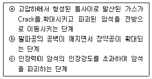
- ⓐ → ⓑ → ⓒ
- ⓑ → ⓒ → ⓐ
- ⓐ → ⓒ → ⓑ
- ⓒ → ⓐ → ⓑ
(정답률: 알수없음)
30. 터널의 라이닝이 콘크리트 압축강도가 150kgf/cm2 때 인장강도는 10kgf/cm2이다. 수회 발파로 진동응력을 받을 경우를 고려하여 허용인장응력을 2kgf/cm2으로 가정하였을 때 매질내에 발생하는 전파방향의 진동속도는? (단, 매질의 밀도는 2.6이고 탄성파 전파속도는2000m/sec이다.)
- 2.67kine
- 3.77kine
- 4.87kine
- 5.97kine
(정답률: 0%)
31. 그림과 같은 평행공 심빼기 발파에서 공공(무장약공)의 직경 ø ＝ 152 mm이다. 첫 번째 정방형의 한변 길이 W1과 두 번째 정방형의 한변 길이 W2를 계산한 것 중 맞는 것은?
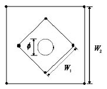
- W1 ＝ 215 mm, W2 ＝ 452 mm
- W1 ＝ 322 mm, W2 ＝ 683 mm
- W1 ＝ 451 mm, W2 ＝ 755 mm
- W1 ＝ 534 mm, W2 ＝ 957 mm
(정답률: 알수없음)
32. 암반발파 현장의 동일한 장소에서 착암작업 음향레벨이 128dB인 착암기 2대가 동시에 작업하고 있다. 음원으로 부터 200m 이격된 지점에서의 음압레벨은?
- 131 dB
- 77 dB
- 65 dB
- 51 dB
(정답률: 알수없음)
33. 수직천공과 비교시 경사천공의 장점이 아닌 것은?
- 느슨한 암석의 자유면 보호에 유리
- 낮은 계단발파에서 파쇄율이 양호
- 낮은 계단발파에서 비산거리가 짧음
- 자유면 반대방향의 후면파괴영역이 감소
(정답률: 알수없음)
34. 전기발파를 실시하였는데 발파 회로의 여기저기에 불발이 되었을 때 불발의 원인과 거리가 먼 것은?
- 발파기의 출력부족
- 결선부가 녹슬어 있는 경우
- 타사제품의 뇌관을 혼용하였을 경우
- 모선과 각선이 단선되어 있는 경우
(정답률: 알수없음)
35. 벤치발파에서 자유면에 가장 가까운 1열에서 발생하는 비석방지 대책으로 틀린 것은?
- 1열의 저항선을 동일하게 천공한다.
- 1열의 장약량을 감소시킨다.
- 자유면 전방과 벤치 상단부에 전회발파의 파쇄암을 남겨둔다.
- 벤치 하부에 전회 발파의 파쇄암을 남겨둔다.
(정답률: 20%)
36. 평균흡음율이 0.03인 방을 흡음처리하여 평균흡음율을 0.3으로 올렸다. 이때 흡음에 의한 감음은 대체로 몇 dB 정도 되는가?
- 5 dB
- 10 dB
- 15 dB
- 20 dB
(정답률: 14%)
37. 화약 내부에서는 폭굉압이 발생하는데, 이 폭굉압은 동적 폭굉압과 정적 압력으로 나눌 수 있다.이 중 정적 압력과 관계없는 것은?
- 폭발반응 생성물의 양
- 폭발반응 생성물의 상태
- 반응 속도
- 용기의 크기
(정답률: 10%)
38. 균질한 암석의 내부에 구상의 장약실을 만들고, 이것을 폭발시켰다고 가정하면 암석내부의 파괴상황은 약실로부터 분쇄 - 소괴 - 대괴 - 균열 - 진동층으로 위력권을 분류할 수 있다. 이러한 위력권의 범위를 결정하는 요소 중 가장 거리가 먼 것은?
- 사용하는 폭약의 종류와 장약량
- 피폭파물의 성질과 조직
- 주벽을 구성하는 물질의 파괴항력
- 지발시차
(정답률: 알수없음)
39. 파괴효과의 관점에서 제발발파와 비교해서 MS 발파법의 특징으로 틀린 것은?
- 분진의 발생량이 비교적 적다.
- 발파에 의한 진동이 적다.
- 발파에 의한 폭음이 적다.
- 뇌관의 수가 적게 사용된다.
(정답률: 알수없음)
40. 발파에 따른 파쇄입도에 영향을 미치는 요인에 대한 설명 중 옳지 못한 것은?
- 발파후 버럭처리에 따른 후속 장비가 대용량일 경우 대괴의 버럭으로 계획하여 작업하여야 한다.
- 암석의 경우 인장강도가 압축강도에 비해 8∼10배 낮기 때문에 이를 이용하여 암반을 효과적으로 파쇄하여야 한다.
- 최적 입도의 암석이란 발파후 별도의 처리를 필요로 하지 않은 크기의 파쇄암이다.
- 벤치발파에서 파쇄입도에 영향을 미치는 요인으로는 천공의 경사, 천공의 정밀도 등이다.
(정답률: 0%)
3과목: 암석역학
41. 길이 100mm의 NX코어(직경54mm)의 암석 시험편을 이용하여 탄성파 속도를 측정하였더니, P파의 도달 시간은 22μsec, S파의 도달 시간은 38μsec이었다. 이로부터 P파와 S파의 탄성파 속도는 각각 얼마인가?
- 4,545 m/sec, 2,632 m/sec
- 4,640 m/sec, 2,770 m/sec
- 3,550 m/sec, 2,594 m/sec
- 5,270 m/sec, 2,656 m/sec
(정답률: 0%)
42. 일축압축상태에 놓여진 암반내에 원형공동을 굴착시 암반내 응력의 크기는 아래의 식으로 주어 진다. 그림의 4점중 접선방향의 응력이 최대인 점은? (단, 암반은 이상적인 탄성체라고 가정하고, A, B, C, D점은 터널 벽면이다.)
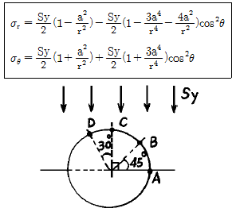
- A지점
- B지점
- C지점
- D지점
(정답률: 8%)
43. 단면적 100 cm2의 원주형 암석시편이 5 ton의 압축하중을 받고 있다. 하중방향과 60° 경사된 면상에 일어나고 있는 수직응력은 얼마인가?
- 7.5 kg/cm2
- 12.5 kg/cm2
- 17.5 kg/cm2
- 37.5 kg/cm2
(정답률: 알수없음)
44. 암반층에 발파를 통한 암반구조물을 구축하고자 한다. 구조물의 안정성평가를 위한 Heok-Brown파괴조건식을 이용하고자 할 때 현지암반의 일축압축강도와 인장강도를 평가하기 위한 식으로서 옳은 것은? (단, 압축조건을 +, 인장조건을 - 로 한다.)
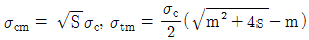
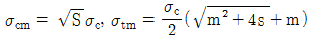
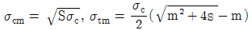
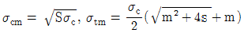
(정답률: 알수없음)
45. 다음 역학적 모형중 Newton 유체를 나타내는 모형은 어느 것인가?
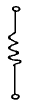
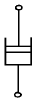
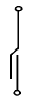
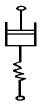
(정답률: 알수없음)
46. 암석에 있어서 creep 현상이란?
- 일정 변형하에서 응력이 시간에 따라 증대하는 현상
- 일정 응력하에서 탄성계수가 시간에 따라 감소하는 현상
- 일정 응력하에서 변형이 시간에 따라 감소하는 현상
- 일정 응력하에서 변형이 시간에 따라 증대하는 현상
(정답률: 알수없음)
47. 터널 천정부에 두께가 1 m인 절리 암층이 존재한다. 터널의 안전성 확보를 위하여 종방향, 횡방향으로 간격이 1.5m가 되도록 록볼트를 설치하였다. 암반의 단위중량이 2.7t/m3이고 록볼트의 강도가 8 ton인 경우, 록볼트의 안전률을 계산하시오.
- 0.7
- 1.0
- 1.3
- 1.6
(정답률: 알수없음)
48. 어느 암석에서 광물입자의 부피가 4.5cm3이고 공극의 부피가 0.5cm3이면 공극률은?
- 10%
- 15%
- 20%
- 25%
(정답률: 17%)
49. RMR점수가 60점인 암반의 변형계수는?
- 1.0 × 105 kg/cm2
- 2.0 × 105 kg/cm2
- 3.0 × 105 kg/cm2
- 4.0 × 105 kg/cm2
(정답률: 15%)
50. Mohr의 파괴이론과 관련한 설명이 틀린 것은?
- 응력원이 파괴포락선의 내부에 존재하면 파괴가 발생하지 않는다.
- 정수압 상태에서도 파괴가 발생한다.
- 응력원이 파괴포락선과 접하면 파괴가 발생한다.
- 파괴면의 방향을 알 수 있다.
(정답률: 9%)
51. 다음 중 암석파열(rock burst) 현상에 대한 설명으로 틀린 것은?
- 암석파열을 발생시키는 원인을 방아쇠 효과(trigger effect)라고 한다.
- 현지응력이 매우 크고, 암석의 파괴 후 강성이 주위 암반의 강성보다 작을 때 발생하기 쉽다.
- 암석이 Hooke 탄성체에 가깝고 충분히 큰 탄성변형률 에너지를 축적할 수 있을 정도로 단단할 경우 발생하기 쉽다.
- 현지응력의 크기와 주위 암반의 강성이외에도 터널의 크기와 방향 등에 따라 달라질 수 있다.
(정답률: 알수없음)
52. 암석의 삼축압축시험에서 일반적으로 관찰되는 현상과 거리가 먼 것은?
- 봉압(confining pressure)이 커질수록 암석은 연성적(ductile) 거동을 한다.
- 봉압(confining pressure)이 클수록 암석의 강도는 증가한다.
- 압축시험기의 강성이 클수록 암석시료는 더 폭발적으로 파괴된다.
- 서보조절 기능이 있는 압축시험기를 이용하여 가압하면 시험기의 강성이 낮더라도 암석시료의 파괴 후 거동(post failure behavior)을 관찰할 수 있다.
(정답률: 0%)
53. 다음 중 폐석 적치장이나 흙사면에서 일어날 수 있는 사면의 파괴 형태는?
- 평면파괴
- 쐐기파괴
- 원호파괴
- 전도파괴
(정답률: 알수없음)
54. 그림에서와 같이 하나의 불연속면을 포함하고 있는 시험편에 대한 삼축압축시험에서 축방향 하중과 불연속면이 이루는 β 각이 얼마일 때 가장 작은 강도치를 나타내는가? (단, 불연속면의 마찰각 ø = 30° )
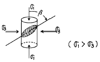
- 30°
- 45°
- 60°
- 90°
(정답률: 20%)
55. 단위중량 27 kN/m3, RMR 50 정도의 지반에 높이 5 m, 폭 10 m의 터널을 굴착하려 한다. 이 터널의 지지하중은? (단, Unal의 방식으로 계산하시오.)
- 0.135 MPa
- 1.35 MPa
- 13.5 MPa
- 135 MPa
(정답률: 0%)
56. 암석의 탄성파 속도는 비파괴실험으로서 암질을 평가 할 수 있다는 장점이 있다. 암석의 탄성파 속도에 영향을 미치는 요소에 대한 설명으로 틀린 것은?
- 암석의 밀도가 클수록 탄성파 전파 속도는 커진다.
- 공극율이 클수록 탄성파 전파 속도는 작아진다.
- 층상암상에서 층에 평행한 방향의 속도는 수직방향의 속도보다 작게 나타난다.
- 암석에 작용하는 구속압력이 증가 할수록 탄성파 전파 속도는 커진다.
(정답률: 알수없음)
57. 그림과 같이 두께 t, 반경 R의 얇은 원주를 세워 힘 -F를 줄 때 x = o, y =R/2인 P점에서 χ 방향으로의 σx 의 크기는?
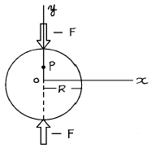
- σx = F/t/2R
- σx = F/t/πR
- σx = -F/t/2πR
- σx = 2F/t/πR
(정답률: 알수없음)
58. 암석의 단축압축시험시 미국재료학회(ASTM)에서 규정한 원주형 시험편의 지름:길이의 규격비는 얼마인가?
- 1 : (0.5∼0.8)
- 1 : 1
- 1 : (2∼2.5)
- 1 : 6 이상
(정답률: 9%)
59. 다음 중 온도가 높아졌을 때 암석의 거동이 아닌 것은?
- 파괴강도가 저하한다.
- 파괴변형률이 증가한다.
- 항복현상을 나타낸다.
- 탄성적인 성질을 나타낸다.
(정답률: 10%)
60. 암반분류법인 Q값을 이용한 터널의 지보량 산정을 위해서는 터널의 등가규격(equivalent dimension)이 계산되어야 하고 이를 위해서는 터널의 ESR(Excavation Support Ratio) 값이 선정되어야 한다. 다음 지하 암반시설들 중 ESR 값이 가장 낮게 선정되어야 하는 것은?
- 지하 핵발전소
- 임시적인 광산터널
- 지하 식품저장시설
- 수력발전소의 도수터널
(정답률: 알수없음)
4과목: 화약류 안전관리 관계 법규
61. 다음 중 화약류에 있어서 불발된 장약에 대한 조치로 틀린 것은?
- 점화후 15분 이상 사람을 출입금지 한다.(단, 전기발파에서는 다시 점화되지 않도록 한 후 5분이상)
- 불발한 화약류는 땅에 묻는다.
- 불발한 천공에 물을 주입하고 화약류를 회수한다.
- 불발된 발파공에 압축공기 주입후 메지를 뽑고 뇌관에 영향을 미치지 아니하게 하면서 조금씩 장전하고 다시 점화한다.
(정답률: 알수없음)
62. 총포· 도검· 화약류등단속법 기술상 기준으로 옳은 것은?
- 화약류를 갱내 또는 발파장소에 운반시에는 배낭 및 운반용기에 넣어서 운반하되 동일인이 화약 또는 폭약과 뇌관류를 동시에 운반하는 것은 절대 금한다.
- 한번 발파한 천공된 구멍에 다시 장전해서는 않된다.
- 초유폭약은 가연성 가스가 0.7% 이상 되는 장소에서는 발파하지 아니한다.
- 전기발파의 전선은 점화하기 전에 화약류를 장전한 장소로부터 20m 이상 떨어진 장소에서 도통 및 저항시험을 해야 한다.
(정답률: 알수없음)
63. 화약류 취급업자의 장부 비치에 대하여 틀린 것은?
- 제조업자는 제조명세부 및 원료 화약류수지명세부를 비치하여야 한다.
- 판매업자는 양도, 양수 명세부를 비치하여야 한다.
- 화약류 저장소 설치자 및 화약류 사용자는 화약류 출납부를 비치하여야 한다.
- 장부는 그 기입을 완료한 날부터 3년간 보존하여야한다.
(정답률: 알수없음)
64. 화약류를 발파 또는 연소시키려는 사람이 행정자치부령이 정하는 바에 의하여 화약류의 사용지를 관할하는 경찰서장의 화약류의 사용허가를 받지 않고 발파 또는 연소한 경우 처벌규정으로 옳은 것은?
- 5년이하의 징역 또는 1천만원 이하의 벌금형
- 10년이하의 징역 또는 2천만원 이하의 벌금형
- 300만원 이하의 과태료처분
- 2년이하의 징역 또는 500만원이하의 벌금형
(정답률: 0%)
65. 총포· 도검· 화약류등단속법 시행령 제2조의 보안물건 중 화약류취급소가 속하는 보안물건은 몇 종 보안물건인가?
- 제1종 보안물건
- 제2종 보안물건
- 제3종 보안물건
- 제4종 보안물건
(정답률: 알수없음)
66. 화약류를 양도 또는 양수하고자 하는 사람은 행정자치부령이 정하는 바에 의하여 그 주소지 또는 화약류의 사용지를 관할하는 경찰서장의 허가를 받아야 한다. 다음 중 화약류 양도· 양수허가를 받지 아니하고 양도· 양수 할수 있는 경우로 틀린 것은?
- 광업법에 의하여 광물의 채굴을 하는 사람이 그 광물의 채굴을 목적으로 대통령이 정하는 수량이하의 화약류를 양수하는 경우
- 화약류의 수출입허가를 받은 사람이 그 수출입과 관련하여 화약류를 양도· 양수하는 경우
- 화약류 판매업자가 판매할 목적으로 화약류를 양도·양수하는 경우
- 화약류 사용허가를 받은 사람이 그 사용과 관련하여 화약류를 양도· 양수하는 경우
(정답률: 알수없음)
67. 장난감용꽃불류를 수입할 때는 누구의 허가를 받아야 하는가?
- 경찰서장
- 지방경찰청장
- 경찰청장
- 행정자치부장관
(정답률: 알수없음)
68. 화약류의 안정성을 확인하기 위하여 내열시험을 하였다. 내열시험시간이 얼마이상이면 안정성이 있는가? (단, 최소시간)
- 3분
- 5분
- 8분
- 10분
(정답률: 28%)
69. 화약류 제조업자, 판매자 및 사용자는 제조· 판매 또는 사용상황를 관할 경찰서장을 거처 허가관청에 언제까지 보고하여야 하는가?
- 제조· 판매 또는 사용한 매월의 다음달 10일까지
- 제조· 판매 또는 사용한 매월의 다음달 7일까지
- 제조· 판매 또는 사용한 매월의 말일까지
- 제조· 판매 또는 사용한 매월의 다음달 5일까지
(정답률: 알수없음)
70. 화약류를 도난 당하거나 잃어버린 때에는 소유자, 관리자는 지체없이 경찰관서에 신고하여야 한다. 신고를 하지 않을 때에는 어떤 행정처분을 받게 되는가?
- 6월의 효력정지
- 1월의 효력정지
- 15일의 효력정지
- 경고
(정답률: 알수없음)
71. 다음 화약류와 관련한 허가사항중 허가권자가 다른 것은?
- 화약류관리보안책임자 면허
- 수중저장소설치 허가
- 화약류판매업 허가
- 3급 화약류저장소설치 허가
(정답률: 10%)
72. 화약류 취급소의 정체량 중 맞는 것은? (단, 초과해서는 않되는 수량임)
- 화약 800킬로그램
- 전기뇌관 3500개
- 도폭선 6킬로미터
- 폭약 450킬로그램
(정답률: 알수없음)
73. 초유폭약에 의한 발파 기술상의 기준에 관한 설명중 옳은 것은?
- 뇌관이 달린 폭약은 장전용호오스를 이용하여 조심스럽게 장전할 것
- 장전후에는 가급적 여유를 두고 천천히 점화할 것
- 장전기는 장전작업중에 발생하는 정전기가 소산할 수 있도록 땅에 닿게 할 것
- 철관류· 궤도 또는 상설의 전기접지계통을 접지용으로 편리하게 이용할 것
(정답률: 알수없음)
74. 운반기간이 경과한 때의 신고필증의 반납은 누구에게 하는가?
- 발송지를 관할하는 경찰서장
- 도착지를 관할하는 경찰서장
- 발송지를 관할하는 파출소장
- 도착지를 관할하는 파출소장
(정답률: 34%)
75. 다음 중 화약류저장소 종류에 따라 화약류를 저장할 수있는 최대저장량을 기술한 것 중 틀린 것은?
- 1급저장소 - 화약40톤, 폭약20톤
- 2급저장소 - 화약20톤, 폭약10톤
- 3급저장소 - 화약50㎏, 폭약25㎏
- 간이저장소 - 화약30㎏, 폭약15㎏
(정답률: 알수없음)
76. 화약류관리보안책임자 면허증에 대한 설명으로 옳지 않은 것은?
- 화약류관리보안책임자 면허소지자가 주민등록상의 주소의 변경이 있을 시에는 즉시 관할 경찰서에 신고해야 한다.
- 면허증을 분실하였을 때에는 면허관청에 신고하여 다시 교부받을 수 있다.
- 면허정지 또는 취소처분을 받은 때에는 지체 없이 허가청에 반납해야 한다.
- 면허증을 분실했을 경우에는 허가청에 재교부신청서와 함께 분실경위서를 첨부하여 제출해야 한다.
(정답률: 알수없음)
77. 화약류 안정도시험에 대한 설명으로 옳은 것은?
- 질산에스텔 성분이 들어있는 폭약이 제조일로부터 1년이 지나면 화약류 안정도시험을 실시해야 한다.
- 질산에스텔 성분이 들어있지 않은 폭약은 제조일로부터 2년이 지나면 안정도시험을 해야 한다.
- 질산에스텔 성분이 들어있는 폭약이 제조일로부터 1년이 지나면 유리산 또는 가열시험을 한다.
- 질산에스텔 성분이 들어있지 않은 폭약은 제조일로부터 3년이 지나면 매년 유리산시험을 하고 4시간이내에 청색리트머스시험지가 전면적색으로 변하면 내열시험을 한다.
(정답률: 알수없음)
78. 동일 차량에 함께 실을 수 있는 화약류를 나타낸 것 중 틀린 것은?
- 폭약 - 화약 또는 도폭선
- 화약 - 포경용신관
- 도폭선 - 공업용뇌관
- 도폭선 - 꽃불류
(정답률: 알수없음)
79. 법인의 대표자나 법인 또는 개인의 대리인, 사용인 그밖의 종업원이 그 법인 또는 개인의 업무에 관하여 총포·도검· 화약류등단속법을 위반한 때에 처벌로 옳은 것은?
- 총포· 도검· 화약류 등 단속법을 위반한 행위자를 벌하는 외에 그 법인 또는 개인에 대하여는 처벌하지 않는다.
- 총포· 도검· 화약류 등 단속법을 위반한 행위자를 벌하는 외에 그 법인 또는 개인에 대하여도 각 해당조항의 벌금형으로 벌한다.
- 총포· 도검· 화약류 등 단속법을 위반한 행위자를 벌하는 외에 그 법인 또는 개인에 대하여도 각 해당 조항의 과태료를 처분한다.
- 총포· 도검· 화약류 등 단속법을 위반한 행위자를 벌하는 외에 그 법인 또는 개인에 대하여도 위반자와 같이 처벌한다.
(정답률: 알수없음)
80. 꽃불류의 사용 허가신청의 경우 필요하지 않는 서류는?
- 사용순서대장
- 제조소명
- 사용장소 및 그 부근약도
- 화약류저장소의 설치허가증 사본
(정답률: 알수없음)
5과목: 굴착공학
81. 표준관입시험(Standard Penetration Test)에서 관입저항치(N)을 구하기 위하여 시행되는 표준사항이 아닌 것은?
- 64 kg(140 lbs)의 추를 사용한다.
- 낙하 높이는 76 cm(30 inch)로 한다.
- 교란층을 통과하는 타격횟수도 반드시 포함한다.
- 관입깊이 30 cm(12 inch)가 될 때까지의 타격횟수를 사용한다.
(정답률: 8%)
82. Rock bolt의 형식중 테이퍼(taper)를 붙인 볼트의 선단부가 셸(shell)내로 끌려 들어가 셸을 확대하여 암반에 압착, 정착되는 형식은?
- 익스펜션형
- 선단접착형
- 모르타르접착형
- 스웰렉스형
(정답률: 0%)
83. 다음 중 개착공법의 설명으로 맞지 않는 것은?
- 내공 이용도에 따라 복잡한 구조의 축조가 가능하다.
- 공사중에 지표면 사용이 교통이나 연도에 주는 영향이 크다.
- 깊이가 낮은 터널에서는 공비가 저렴하고 공기도 단축된다.
- 굴착방법에 따라 소굴식, 무복공식, 복공식으로 분류한다.
(정답률: 10%)
84. 그림과 같은 원형단면의 터널에서 인장응력이 가장 크게 발생하는 장소는 어느 곳인가?
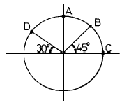
- A점
- B점
- C점
- D점
(정답률: 8%)
85. 회수된 보링코어(암심)의 길이를 이용하여 계산하는 RQD값이 70%일 때 대상 암반은 어떠한 암반으로 분류되는가?
- 양호(good)
- 보통(fair)
- 불량(poor)
- 매우불량(very poor)
(정답률: 알수없음)
86. 그림과 같은 토질사면에 발생하는 인장균열(tensile crack)의 깊이 z를 이론적으로 결정하는데 필요한 토질의 물성치가 아닌 것은?
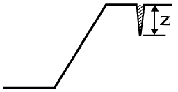
- 지지력 계수
- 점착력
- 내부마찰각
- 단위중량
(정답률: 알수없음)
87. 사면의 경사가 비교적 완만하고 부드러운 점성토가 굳은 지반위에 있는 경우에 일어나기 쉬운 파괴양상은?
- 사면선단파괴
- 유한파괴
- 저부파괴
- 사면내파괴
(정답률: 알수없음)
88. NATM 터널 시공시 일상의 시공관리를 위해 반드시 실시해야할 계측 항목이 아닌 것은?
- 지중변위측정
- 갱내관찰조사
- 내공변위측정
- 천단침하측정
(정답률: 알수없음)
89. 암반 개량을 위한 그라우팅(grouting)공법에서 주입효과에 영향을 미치는 요소이다. 가장 관련이 적은 것은?
- 초기응력
- 주입압력
- 주입 그라우트 농도
- 구멍 간격· 배치
(정답률: 10%)
90. 지반중의 응력을 탄성이론으로 해석하는 문제는 그림에서와 같이 4가지로 구분할 수 있다. 그림 중에서 Cerutti 문제를 나타내는 것은?
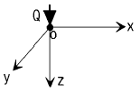
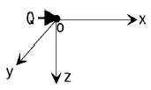
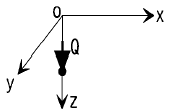
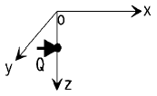
(정답률: 0%)
91. 다음 그림에서 전주동토압은 얼마인가?
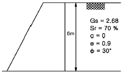
- 8.46 t/m
- 9.46 t/m
- 10.44 t/m
- 11.44 t/m
(정답률: 10%)
92. 숏크리트(shotcrete)배합을 결정함에 있어 검토해야 할 사항이 아닌 것은?
- 소요강도가 얻어질 것
- 부착성이 좋을 것
- 호스의 막힘이 없을 것
- 리바운드(rebound)율이 클 것
(정답률: 알수없음)
93. 터널의 인버트(invert)에 대한 설명 중 잘못된 것은?
- 암반상태가 불량할수록 곡률반경이 작은 것을 이용한다.
- 인버트 콘크리트를 복공보다 먼저 시공하는 것은 선타설방식이다.
- 인버트는 굴착 후 될수록 서서히 폐합시킨다.
- 인버트의 빠른 폐합을 위해서 숏크리트를 사용한다.
(정답률: 알수없음)
94. 포아송비가 0.3일 경우, 탄성론에 의한 초기 수평 - 수직응력 비(Ko)는 얼마인가?
- 0.21
- 0.23
- 0.43
- 3.33
(정답률: 알수없음)
95. 수직응력 Sv, 수평응력 Sh, K＝Sh/Sv라 하면 원형공동 경계에 작용하는 접선방향 경계응력의 분포는 그림과 같다. 그림의 설명으로서 가장 올바른 것은?
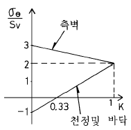
- 수직응력이 수평응력보다 3배이상 크면 천정과 바닥에서는 압축응력이 발생
- 수직응력이 수평응력보다 3배이상 크면 천정과 바닥에서는 인장응력이 발생
- 정수압하의 터널벽면에서는 외압의 3배에 해당하는 압축응력이 발생
- 정수압하의 터널벽면에서는 외압의 3배에 해당하는 인장응력이 발생
(정답률: 알수없음)
96. 암석의 분류방법의 일종으로 보링코아 회수율로서 암반의 상태를 분류하는 방법으로서 우리나라에서도 암반굴착 및 사면절취의 암 판정으로 오랫동안 사용해 오고 있는 방법은?
- Terzaghi의 분류법
- Deere의 분류법
- 절리발달암의 CSIR 분류법
- NGI터널 암지수
(정답률: 알수없음)
97. 다음 중 팽창성 지반에 대한 대책과 거리가 먼 것은?
- Core를 잔류시키고 Ring-cut을 한다.
- 단면 형상을 사각형으로 한다.
- 조기에 상하단면을 폐합시킨다.
- 막장 Shotcrete, 막장면 Rock bolt 등을 시공한다.
(정답률: 0%)
98. 전단탄성계수(shear modulus) G = 500MPa, 초기지압 Po =1MPa인 암반에 직경 10m의 원형 터널을 굴착하고 터널 내부에서 지보압(support pressure) Pi = 0.4MPa이 암반에 작용할 경우 이 터널의 내공변위(radial displacement)는? (단, 암반은 완전 탄성체로 가정, 공동내부로 향한 변위는 (+))
- 2.0 mm
- 6.0 mm
- 1.5 mm
- 3.0 mm
(정답률: 알수없음)
99. 터널 굴착의 각 단계별 조사항목 중 계획단계에 속하지 않는 것은?
- 시공방법의 검토
- 굴착방식, 공법의 검토
- 2차복공의 검토
- 계측의 설계 검토
(정답률: 알수없음)
100. 유압식 착암기(Hydraulic Rock drill)의 기능이 아닌 것은?
- 타격작용(impact mechanism)
- 암분배제작용(sluge cleaning)
- 재밍작용(jamming)
- 회전작용(rotation)
(정답률: 10%)